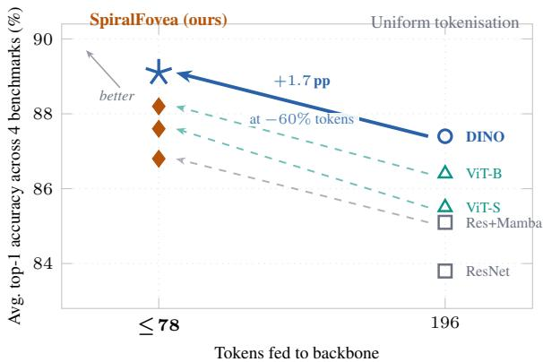

arXiv new; input-adaptive visual tokenization · P0 · 2026-07-02
SpiralFovea：视觉 SSL/VFM 的瓶颈不只是模型结构，也包括 tokenization；这篇对 DINO/MAE/ViT 系路线很有启发
把 token identity、location、scale、count 都变成图像内容函数，不改 backbone 参数也能改变输入证据分配。
编号2607.00780
优先级P0
类别arXiv new; input-adaptive visual tokenization
会议arXiv new; input-adaptive visual tokenization
方法根据局部视觉熵先选 hotspot anchors，再生成多尺度 spiral rings；在 backbone 前用 <=78 个自适应 patch 替换固定 196 patch ViT grid。
来源arXiv / OpenReview
先说结论。视觉 SSL/VFM 的瓶颈不只是模型结构，也包括 tokenization；这篇对 DINO/MAE/ViT 系路线很有启发。 把 token identity、location、scale、count 都变成图像内容函数，不改 backbone 参数也能改变输入证据分配。


核心问题
视觉 SSL/VFM 的瓶颈不只是模型结构，也包括 tokenization；这篇对 DINO/MAE/ViT 系路线很有启发。
方法拆解
根据局部视觉熵先选 hotspot anchors，再生成多尺度 spiral rings；在 backbone 前用 <=78 个自适应 patch 替换固定 196 patch ViT grid。
主要贡献
把 token identity、location、scale、count 都变成图像内容函数，不改 backbone 参数也能改变输入证据分配。
实验看点
摘要称 4 个细粒度 benchmark 上 +1.7 到 +2.1 pp，输入 token 减少 60%，每层 self-attention FLOPs 减少 84%，吞吐提升 18-29%。
局限与读法
主要是 fine-grained recognition 和 inference-time tokenization；还需要验证预训练阶段、dense prediction 和视频输入。